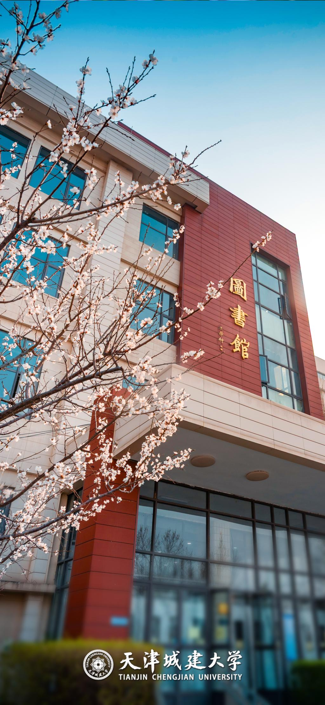
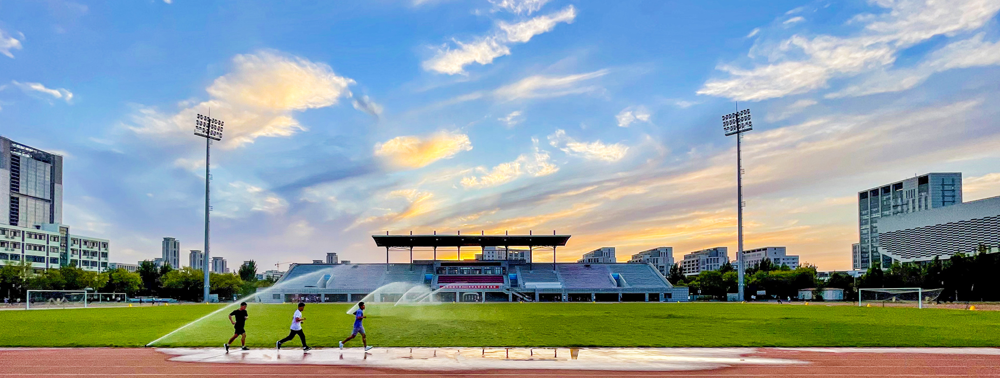
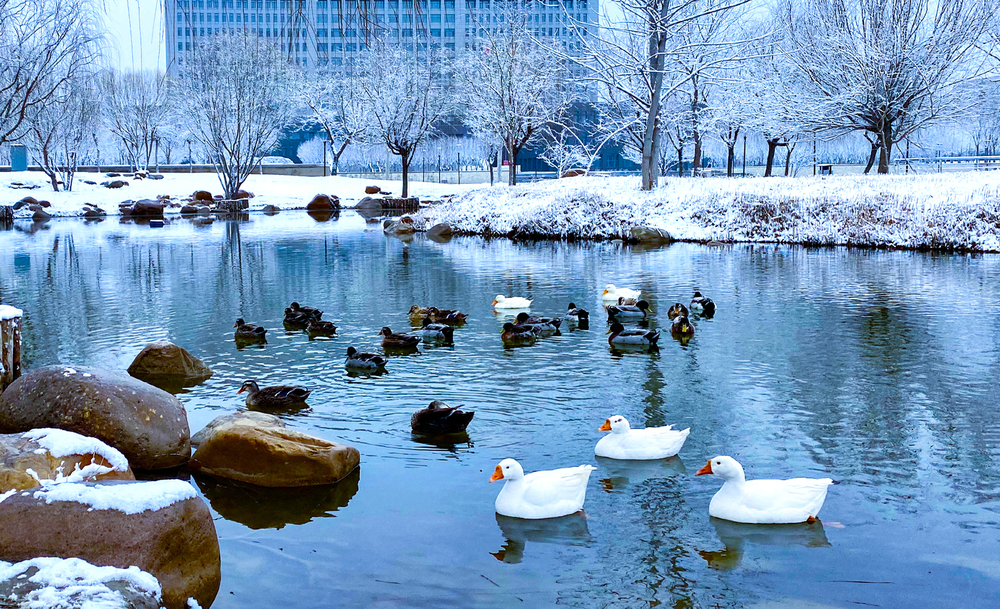

CHAPTER 03 / LIVE
校园生活
平常的一天，也有很多值得记住的小事。
A day on campus
我的校园时间轴
从早八，到晚风
点击时间，看看一天里不同的校园片段。

08:00 / 教学楼
带着早餐的香气赶到教室
早八总有一点匆忙。推开教室门，和同学交换一个眼神，今天的学习就正式开始了。
01
图书馆
找一个靠窗的位置，把手机调成静音。专注的下午，常常从翻开第一本书开始。

02
体育场
晚课之前去跑两圈，或者站在场边为同学加油。操场上的风，总能把一天的疲惫吹散一点。

03
中心湖
这里适合聊天，也适合一个人发会儿呆。湖面把天空留住，脚步自然就慢了下来。

课堂之外
兴趣，让我们在不同的地方相遇
学生社团、体育竞赛、艺术展演、志愿服务……校园生活的答案从来不止一种。加入一件真正喜欢的事，也是在认识新的自己。